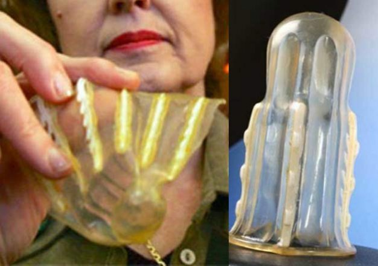

Rape-aXe (RX) is a revolutionary and patented device which aids the battle against sexual violence. It works towards the prevention of rape and subsequent identification of the assailant.
The RX system consists of a condom-like elastic sheath which contains razor-sharp barbs. The woman inserts the single use device into her vagina like a tampon. The presence of Rape-aXe is not apparent externally and there is no discomfort for the woman while it is worn. It cannot cause injury to the woman. The RX can be removed by the woman when she feels it is no longer necessary to be worn as a protective device.

When an attacker penetrates the vagina he enters the Rape-aXe device. Upon his first withdrawal, the barbs attach themselves onto the skin of the penis and the rapist pulls the RX device out of the vagina.
The rapist is almost fully incapacitated by the pain caused by the embedded barbs. This has been described “as if the penis had been caught in a zipper” and the relaxing penis will drive the barbs deeper into the attacker’s flesh.
The victim can use the surprise effect and the time to escape/fight back. Thereby taking back the power which has been taken away.
The device cannot be removed by the attacker, but can only be removed by a clinician; this results in the positive identification of the attacker and can aid in his subsequent arrest and conviction. The removed device can be used to match the DNA of the attacker and victim in court.
Attempting to pull off the device will drive the hooks further into the attacker. If the rapist seeks medical help immediately, no harm is done to his penis. However, the victim has an opportunity in the moment to defend herself and take back her power.